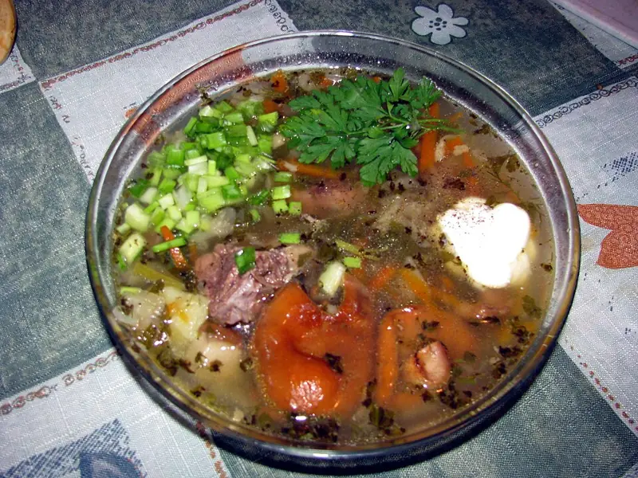

Фото: Шнапс, Public domain

Щи из свежей капусты
Постные щи на воде из свежей капусты с картошкой и томатами
45 мин6 порц.119 ккал на порциюБ 4 · Ж 4 · У 18Русская кухня
Продукты на 6 порц.
- Вода2 л
- Капуста белокочанная500 г
- Картофель3 шт
- Морковь1 шт
- Лук репчатый1 шт
- Помидоры2 шт
- Растительное масло1 ст. л.
- Лавровый лист2 шт
- Соль2 ч. л.
- Перец чёрный молотый1 щеп.
- Чеснок по желанию1 зуб.
- Укроп по желаниюпо вкусу
Как готовить
- Доведите воду до кипения на сильном огне, посолите.
- Положите целую очищенную луковицу и морковь кружками, варите 5 минут на среднем огне.
- Добавьте картофель кубиками и варите 10 минут.
- Капусту нашинкуйте соломкой и положите в кастрюлю. Варите 10 минут, пока капуста не станет мягкой.
- Помидоры натрите на тёрке, кожицу выбросьте. Добавьте в щи вместе с маслом, лавровым листом и перцем, варите 5 минут.
- Достаньте луковицу. Выключите огонь, добавьте чеснок и укроп, дайте настояться 10 минут под крышкой.
Совет. Молодую капусту кладите позже картошки, она варится за 5-7 минут. Летнюю капусту можно варить дольше, она жёстче.